AI CONTRACT REVIEW WORKSPACE
智审
让合同审查有据可查。
围绕设备采购协议第 4.2 条，展示 AI 风险定位、证据核验、人工修订、版本对照与团队复核如何形成可追溯的工作流。

交付要延期，谁来通知采购方？
设备采购协议第 4.2 条写明供应商应在订单确认后 20 个工作日内交付，交付时间需要调整时由双方另行协商。法务需要进一步明确延期通知与补救安排。
这条案例不是把 AI 输出当成最终法律判断，而是观察法务如何从风险提示回到合同原文，核对依据、修改条款并把决定交接给复核人。
原型中的 1 个工作日、3 个工作日是本案例结合采购排期给出的示例修订值，不是通用法律时限或法律建议。
从风险卡进入条款，再把修改交给下一位处理人。
案例主线围绕同一条款推进，避免用户在风险摘要、合同正文、证据中心和版本记录之间丢失上下文。
从风险卡回到第 4.2 条，正文保留上下文并高亮“由双方另行协商”。
核对 V03 原文、合同版本和条款编号；缺少原件的技术指导文件标为待核验。
AI 提供补充方向，法务结合采购排期拟定内容，并在原文位置预览 V04。
保存后比较 V03 / V04，查看新增内容、修改理由、处理人和时间。
提交复核、退回补证、补证后重新提交，并记录通过范围。
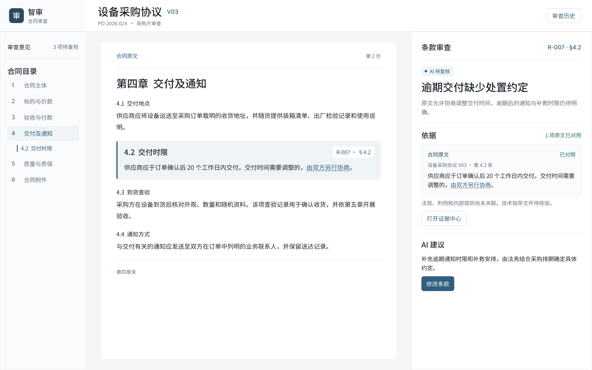
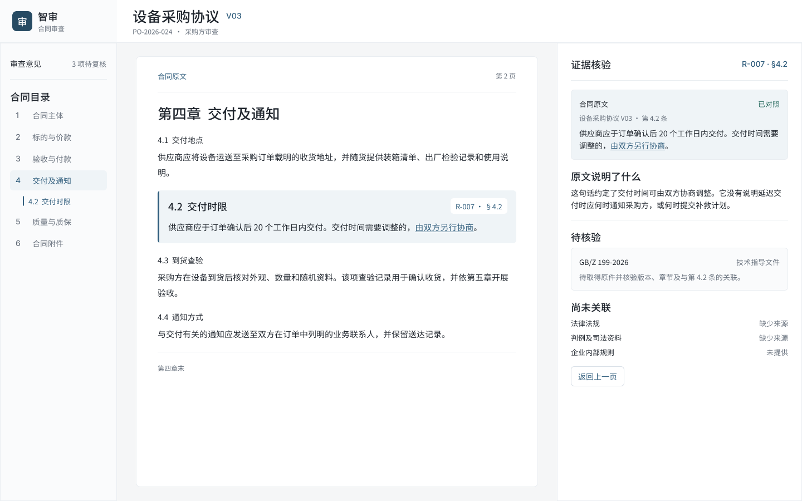
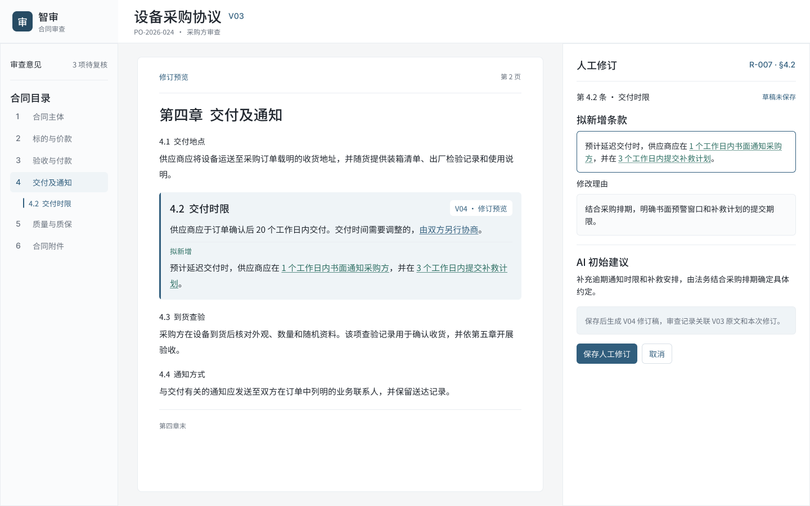
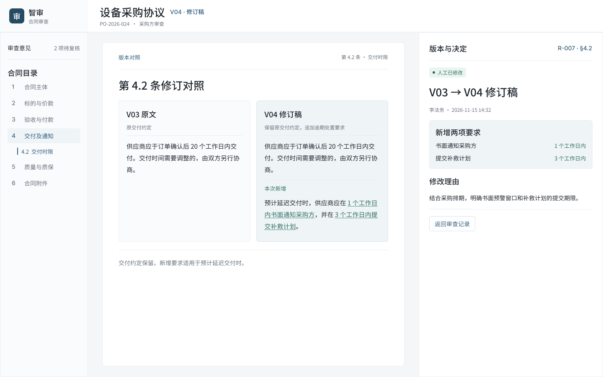
把 AI 建议变成可核验、可撤回、可追溯的工作。
复杂专业工作流的关键不是让 AI 更像人，而是让用户能判断 AI 做了什么、依据是什么，以及自己是否同意。
问题 / 考量风险卡可以帮助定位，但修订时仍要保留原文和上下文，避免只凭摘要判断。
设计回应定位后直接回到第 4.2 条，原句高亮。
问题 / 考量已对照、待核验和尚未关联分别对应不同的后续动作。
设计回应在条款旁展开证据，显示来源和核验状态。
问题 / 考量AI 提议不直接覆盖合同；法务可以修改、取消或保存。
设计回应保存前仍显示 V03，保存后形成 V04。
问题 / 考量退回不是流程终点；需要明确补什么、谁负责、何时重新提交。
设计回应补证、回执、重新提交和复核通过留在同一条审查记录。
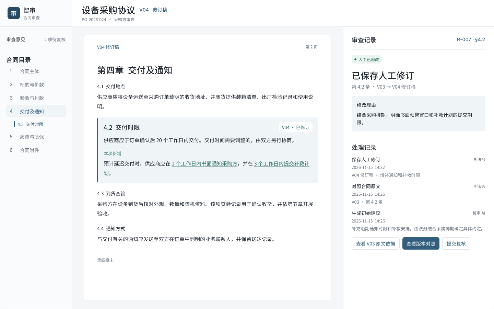
复核不是一个按钮，而是一组明确的责任交接。
经办法务提交 V04 后，复核人核对新增时限；如果证据不足，可以退回补证，指定负责人和截止时间，补齐后再提交。
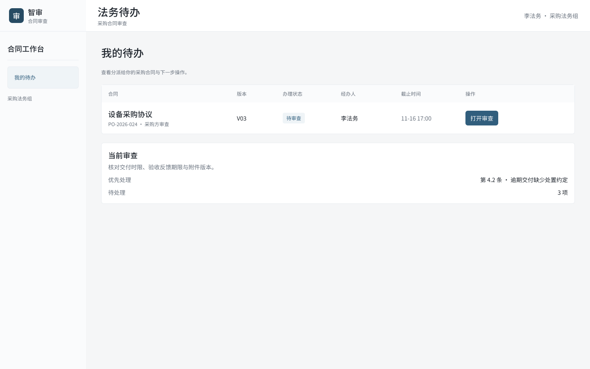
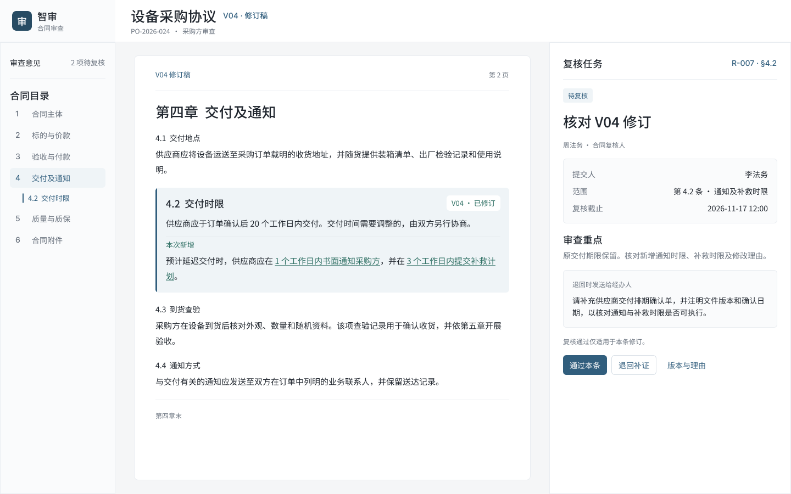
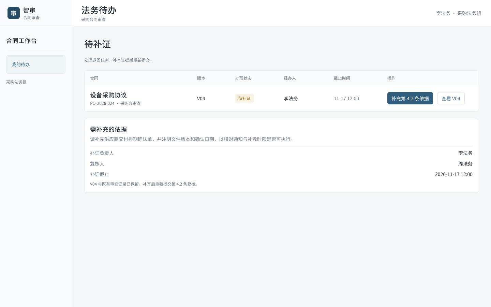
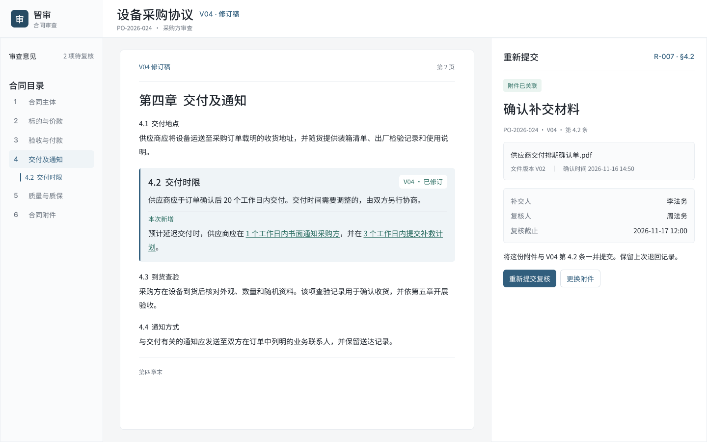
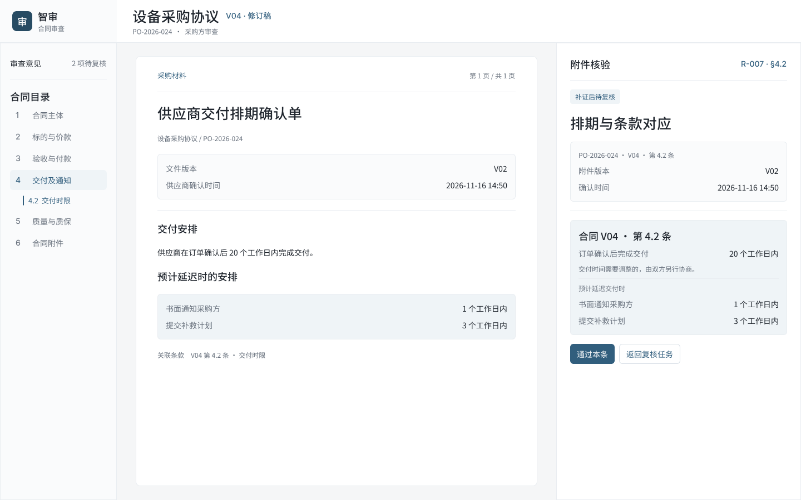
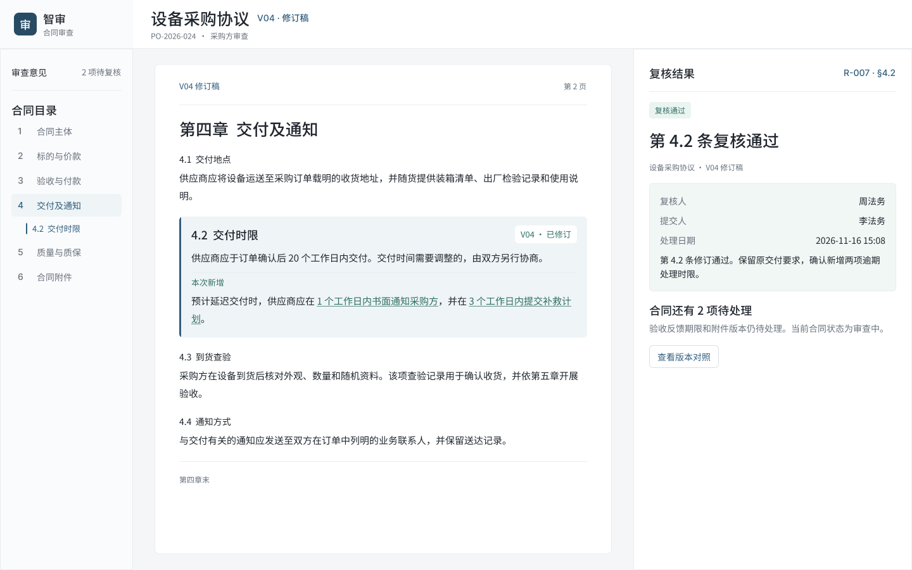
原始项目录屏：附件核验 V02。视频展示的是原型交互，不代表真实业务系统已上线。
证据状态决定下一步，而不只是装饰性标签
证据核验面板按来源类别分区：合同原文、法律法规、判例与公开司法资料、企业内部规则、技术指导文件。面板顶部显示当前分组计数（1 / 5 组已对照），不同状态对应不同操作，不把“有材料”误当成“已经核验”。
- 已对照：可以按合同版本和条款编号回查原句（当前截图中为合同原文 01）。
- 待核验：法律法规、判例、内部规则与技术指导文件 4 组来源尚未关联，需先取得原件再核对版本与条款关联。
- 尚未关联：补齐法规、判例或内部规则的来源后可转为待核验。
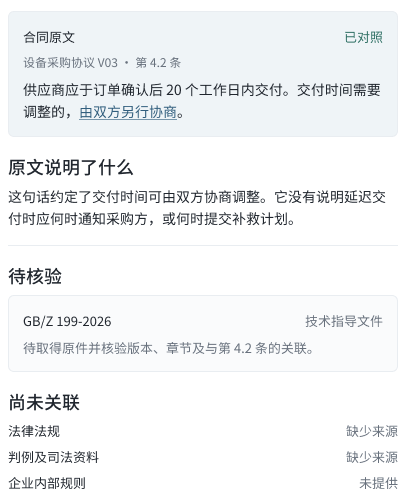
深色侧栏版证据溯源中心，已作为早期探索单列标注
2026-11-20 在 Figma 桌面端逐帧复核「智审 (Copy)」文件：03 - Review & Evidence 页内 R02-01 证据链总览、R02-03 技术指导待核验两帧均为深色侧栏版本，浅色界面出自 02 - Components 页的 C09 证据卡组件规范。因此深色整屏只作迭代记录单列，正式界面以浅色组件版本为准。
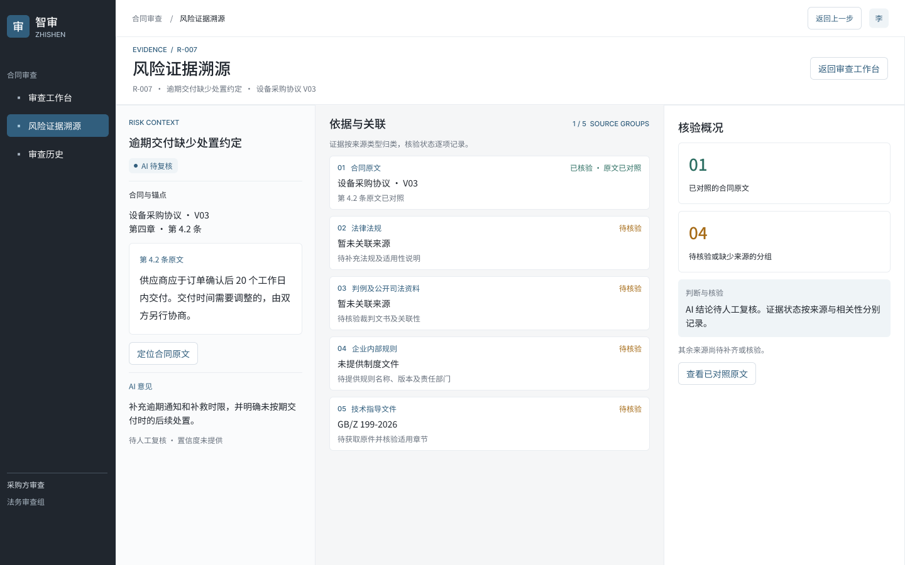
当前展示的是交互方案，不是已验证的法律 AI 产品。
原始案例材料记载已在 Figma 桌面端走查定位、核验、取消、保存及版本回查路径；但真实法务用户测试尚未开展。
- 已具备：核心流程界面、Figma 原型入口、附件核验录屏、版本对照和团队复核状态。
- 尚未验证：首次使用者能否独立完成审查、证据补充效率、AI 建议准确性和真实工作流适配。
- 待补充：个人职责、团队构成、项目周期、真实部署或上线状态。
- 原型中的 1 / 3 个工作日为案例示例值，不可作为普遍合同条款建议。
 维序 WEISU · 让每一次拣货差异，都有据可查、有人负责、有路可走。
维序 WEISU · 让每一次拣货差异，都有据可查、有人负责、有路可走。 微律 · 让复杂的法律问题，变成清晰的下一步行动。
微律 · 让复杂的法律问题，变成清晰的下一步行动。